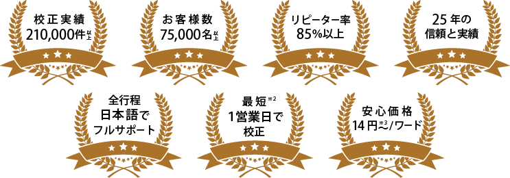
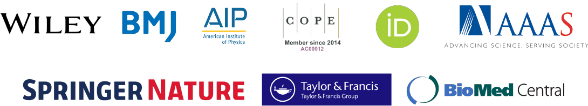

エダンズの実績と特長
※２エクスプレスご利用で14時までに受付完了の場合 ※３プレミアム会員価格適用の場合
エキスパート英文校正・校閲の納期と価格
シンプルで安心な料金設定。スピードとクオリティを実感ください。
年度末の忙しい時期も最短1営業日で校正完了可能です。
| 項目 | 通常 | エクスプレス |
|---|---|---|
| 納期 | 2営業日※4 | 1営業日※5 |
| プレミアム会員価格 | 14円/ワード | 17円/ワード |
| 通常価格 | 15円/ワード | 18円/ワード |
| 最低料金※6 | 5,750円 | |
| お支払い | クレジットカード/銀行振込 ※見積書、請求書、領収書、納品書はPDFまたは郵送でお送りいたします |
|
※４ 5,000ワードまで。以降、5,000ワード毎に1営業日加算。17時以降のご依頼は翌営業日扱いになります。
※５ 5,000ワードまで。以降、5,000ワード毎に1営業日加算。14時以降のご依頼は翌営業日扱いになります。
※６ ご依頼の合計金額が表示金額以下の場合に適用される料金です。
サービス内容
ネイティブ専門家が論文をブラシュアップ。
事前査読やカバーレター作成などもオプションサービスとして承ります。
また投稿後に再校正する場合「10円〜/ワード」の割引価格にて※7ご利用いただけます。
| 標準の英文校正・校閲サービスに含まれる内容 | ||
|---|---|---|
| 誤字脱字、大文字小文字 | 句読点、記号 | 文法、数量表記 |
| 意図の明確化 | 科学的表現の適切性 | 研究の新規・有用性の明確化 |
| ジャーナル投稿規定チェック | 校正証明書 | |
| オプションサービス | ||
事前査読  |
目標ジャーナルの選択 |
カバーレターの作成 |
| アブストラクトの作成 |
査読者の推薦 |
プレスリリースの作成 |
※MYedanzプレミアムには、上記の「無料見積もり・ご依頼」ボタンを押した先のフォームからお申し込みいただけます
採択論文の事例
エダンズが校正を行った論文のうち、実際に採択された論文の一部をご紹介いたします。
Journal of Clinical Medicine Research
分野：心臓病学、救命救急医学、家庭医学、老年医学および小児科
論文：Serious Conditions in COVID-19 Accompanied With a Feature of Metabolic Syndrome
著者：中島 啓 先生
Scientific reports
分野：自然科学、臨床科学
論文： Pooling RT-qPCR testing for SARS-CoV-2 in 1000 individuals of healthy and infection-suspected patients
著者：弘津 陽介 先生
International Journal of Clinical Oncology
分野：臨床腫瘍学
論文：Combination of TAS-102 and bevacizumab as third-line treatment for metastatic colorectal cancer: TAS-CC3 study
著者：吉田 陽一郎 先生

International Journal of Gynecology & Obsterics
分野：産科学および婦人科学
論文： Prognosis of bulky pTIIB cervical cancer treated by radical hysterectomy comparing adenocarcinoma with squamous cell carcinoma using propensity score matching
著者：岡留 雅夫 先生
お客様の声
お客様からいただいた喜びの声の一部をご紹介いたします。
御社にお世話になって
英文誌で発表した論文が４編に
以前校正していただいた原稿ですが、この度、雑誌Phytopathologyに受理されました。植物病理学では定評のある雑誌（米国植物病理学会誌）で、我々も喜んでいます。ありがとうございました。機会があれば校閲してくださった方にもよろしくお伝えください。これで御社にお世話になって英文誌で発表した論文が４編になったと思います。 秋田大学 教授
これまで依頼した中で
最も満足度の高いものでした。
今回お願いしました校正サービスは大変丁寧で、英文校閲だけでなく、より良い論文にするための有益なアドバイスを多数いただき、他社も含めてこれまで依頼した中で、最も満足度の高いものでした。
名古屋工業大学 准教授

校正していただいた論文が
Biomaterialsに一発アクセプト
校正していただいた論文が、雑誌Biomaterialsにアクセプトされました。お礼を申し上げます。ほぼ修正なしの一発アクセプトでした。この雑誌は私がこれまで投稿した中で最もインパクトファクターが高く、かつリビジョンなしのアクセプトも初体験であり、大変驚いています。これもひとえにエダンズのスタッフの皆様のご協力のおかげです。ありがとうございます。 九州大学病院 講師
主な取引先出版社、学術誌、団体
エダンズについて
エダンズは、医学および科学分野の英文校正を専門に掲げ、1995年に福岡で設立されました。
研究者の皆さまのためにリサーチクエスチョンの作成や提示、ギャップおよび状況の分析、戦略的な論文出版計画、
研究計画策定、ならびに研鑽用ツールの提供など、研究の全段階を網羅するサービスを提供しております。
ネイティブ専門家のご紹介
エダンズのネイティブ専門家は全員が英語を母国語とし専門分野でPhDを取得しているか、それに準ずる経験や資格を有しています。
全員が独自の研究プログラムを受講し、シニアエディターのもとで、校正の質向上のための指導を受けています。
300名を超えるエディターの中からエダンズを代表するネイティブ専門家の一部をご紹介します。
Nikki March
英国シニアバイオサイエンティスト。癌や腫瘍の新薬調査経験あり
PhD Cancer Biochemistry, University of Cambridge
専門：細胞シグナリング、腫瘍学、がん幹細胞学
Alison Sherwin
健康・生命科学分野の英語論文校正数5000本以上
PhD Biochemistry, University of Kent
専門：骨関節炎、組織工学と細胞培養を中心とした生化学

Sarah Williams
英国 Young Science Writer of the Year賞ファイナリスト
PhD Human Genetics, University of Oxford
専門：遺伝学、細胞生物学、バイオテクノロジーなど
Keyra Martinez Dunn
医学・ライフサイエンス分野のメディカルライター歴13年
Doctor in General Medicine and Minor Surgery, University of Panama
専門：腫瘍学、神経科学、精神医学、内分泌学など
Ayhan Atmanli
論文出版経験多数
一流誌で査読者としても活躍中
MD Medicine, Heidelberg University
専門：発生生物学、組織工学、再生医療など
※MYedanzプレミアムには、上記の「無料見積もり・ご依頼」ボタンを押した先のフォームからお申し込みいただけます
良くあるご質問
依頼のしかたは？
ご依頼フォームよりご依頼ください。
ウェブフォームでのご依頼が難しい場合は、ご依頼内容をご記入の上
原稿を添えてjapan(at)edanz.comまでお送りください。
ご不明な場合はお電話でお問い合わせください。
フリーダイヤル0120-554685 または 092-715-7208
どのサービスを頼めばいいかわかりません
各サービスの詳細はこちらをご覧ください。
納期はどのくらいですか？
原稿が5,000ワード未満の場合は、通常2営業日後にご返却いたします。
5,000ワード増えるごとに1営業日が加算されます。
エクスプレスサービスの場合は、5,000ワード未満で翌営業日のご返却になります。
5,000ワード増えるごとに1営業日が加算されます。
※ 納期はご依頼受領の翌営業日から数えて算出いたします。ご依頼の受付当日は含みませんのでご注意ください。
原稿内の図表はどうすればいいですか？
校正可能なファイル形式でご送付ください。校正可能なファイルはMS Word、Excel、PowerPoint、Texです。ただし、ファイル内に画像で張り付けられている場合、校正はできませんのでご注意ください。
校正が不要な場合
校正の参考資料としてお預かりいたしますので、校正希望原稿とあわせてご送付ください。参考ファイルとしてお受けできる種類はMS Word、Excel、PowerPoint、Tex、PDF、JPEG、PNG、GIF、TIFFです。
ファイルサイズについて
校正の要不要を問わず、データサイズが大きい場合はサイズを小さくしてお送りください。
校正を頼めば必ず論文は採択されますか？
エダンズの優秀なエディターによる英文校正で、採択率を上げることを目指しています。ただし、原稿の研究内容を編集することはできません。内容の批評は査読者が行います。よって、論文の採択は保証できませんが、可能な限り最高の状態での査読誌への投稿を保証いたします。